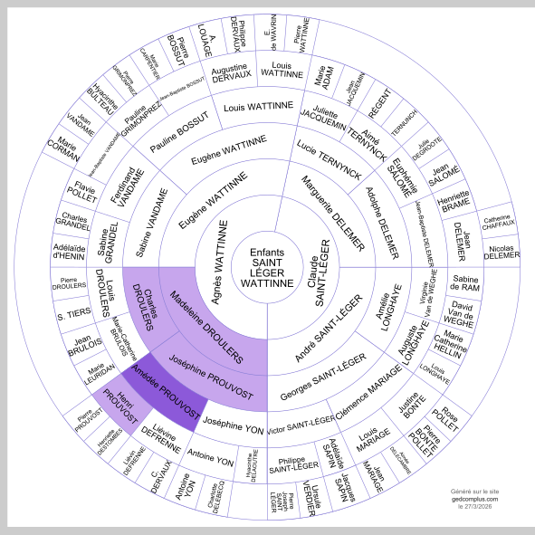

Peignage Amédée Prouvost
Peignage Amédée Prouvost
Résumé
Le Peignage Amédée Prouvost (1851–1999)
Lieu : Roubaix (puis Wattrelos), Nord — Activité : Peignage et filature de laine — Durée d'existence : 148 ans
En 1851, Amédée Prouvost (1820–1883) s'associe avec les trois frères Louis, Jean et Henri Lefebvre pour fonder la société Le Peignage Amédée Prouvost et Cie autour de l'église Saint-Martin de Roubaix. C'est l'un des premiers grands peignages mécaniques de la région — avec celui de Lorthiois-Malard à Tourcoing, qui figure aussi dans notre arbre familial. Le peignage est l'opération qui consiste à démêler, nettoyer et paralléliser les fibres de laine pour produire un ruban continu destiné à la filature.
L'entreprise croît rapidement. En 1865, un second peignage est érigé rue du Collège. En 1892, la société devient anonyme et étend ses bâtiments rue de Cartigny et rue d'Alger, le long de la voie ferrée. Amédée Prouvost est un entrepreneur de la grande génération roubaisienne : il parcourt la France à cheval pour visiter les usines, remplit ses carnets de notes d'affaires, et hisse Roubaix en position dominante dans la filière laine mondiale.
À sa mort, son fils Amédée Charles Prouvost (1853–1927) prend la direction du peignage et l'étend pendant quarante-cinq ans. Pendant la Première Guerre mondiale, il est déporté comme otage et emprisonné 6 mois par les Allemands. Resté seul administrateur du peignage pendant toute l'occupation, il protège ses ouvriers et parvient à empêcher l'enlèvement de nombreuses femmes et jeunes filles. Il reçoit pour cela la médaille des victimes de l'invasion, et est nommé chevalier de la Légion d'honneur le 5 novembre 1923.
En 1911, le petit-fils du fondateur, Jean Prouvost (1885–1978), fonde la Lainière de Roubaix rue d'Oran — filature qui transforme le ruban de laine sortant du Peignage en fil de tissage ou de bonneterie. La Lainière devient rapidement la plus grande filature d'Europe et emploie jusqu'à 8 000 personnes. Elle lance en 1923 la laine à tricoter Pingouin, sous une marque devenue mondiale. Jean Prouvost bâtit parallèlement un empire de presse : Paris-Soir (racheté en 1930), Paris-Match (fondé en 1949), Marie-Claire, Cosmopolitan, Télé 7 Jours.
En 1927, l'unité de la rue du Collège est abandonnée et un grand peignage est érigé à Wattrelos. En 1951, le Peignage Amédée fête son centenaire : une messe est célébrée par le cardinal Liénart en l'église Saint-Vincent de Paul de Wattrelos, suivie d'un déjeuner réunissant 700 cadres et ouvriers, au cours duquel Albert Prouvost père retrace l'historique de l'entreprise. La même année, la société holding Prouvost SA est constituée, devenant le leader mondial du négoce et de la transformation de la laine. En 1966, fusion avec le Peignage Alfred Motte ; en 1970, avec le Peignage Fouan. En 1988, entrée dans le groupe Chargeurs SA. En 1998, cession à l'italien Botto. En 1999, liquidation judiciaire et fermeture définitive.
Les œuvres sociales sont remarquables et précoces : une première cité de 350 maisons est érigée dès 1868 ; une caisse de retraite, applicable après 30 ans de service, est créée en 1896 et son règlement sera maintenu sans modification pendant plus d'un demi-siècle ; un stade est inauguré en 1923, qui accueille tennis, boules, gymnastique et football — l'Excelsior de Roubaix y remporte la Coupe de France en 1933, puis le Championnat de France professionnel en 1947 sous le nom CORT ; un restaurant communautaire ouvre le 6 août 1926, servant 75 000 repas par an en 1951 ; une coopérative de vente est créée en mars 1931. Entre les deux guerres, plusieurs sociétés d'habitations à bon marché sont créées et financées par le groupe. En 1942, sous l'impulsion d'Albert Prouvost fils, est fondé le Comité Interprofessionnel du Logement de Roubaix-Tourcoing (CIL), qui construira plus de 3 000 logements et hébergera 20 000 personnes.
Amédée Prouvost (1820–1883) est un ancêtre de notre famille par sa fille Joséphine Prouvost (1845–1919), qui épouse Charles Henri Droulers — lui-même neveu de Florentin Droulers, cofondateur des Établissements Agache. De cette union naît Madeleine Droulers (1883–1974), qui épouse Eugène Wattinne, dont la fille Agnès Wattinne épouse Claude Saint-Léger en 1923. Le Peignage Amédée Prouvost est ainsi, avec les Établissements Agache et la filature d'Auchy-lès-Hesdin, le troisième grand empire industriel de notre arbre familial.

Sources :
Peignage Amédée Prouvost & Cie : 1851-1951, plaquette du centenaire — Bibliothèque numérique de Roubaix, LAI_D01_001
Base Léonore, notice LH/2230/22 (Amédée Charles Prouvost)
Archives nationales du monde du travail, fonds Prouvost, 1997 014
POP Patrimoine, base Mérimée, notice IA59000488
Wikipédia — Peignage Amédée Prouvost
Wikipédia — Jean Prouvost
thierryprouvost.com — Usines Prouvost
Données familiales (Gramps)